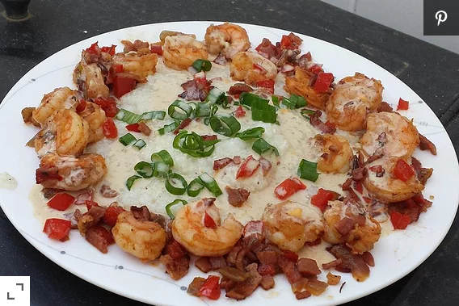

Shrimp and Grits Louisiana Style

Description
Probably the best shrimp and grits recipe I have made! Easy and low ingredient count!
Ingredients
- 1 cup water
- 1 pinch salt
- 6 tablespoons grits
- 2 tablespoons olive oil
- 1/2 cup diced tasso ham
- 2 tablespoons diced onion
- 2 tablespoons diced green bell pepper
- 20 medium shrimp, peeled and deveined
- 1/4 cup white wine
- 1 cup heavy whipping cream
- salt and ground black pepper to taste
- 1 tablespoon chopped green onion, green parts only
Directions
-
Bring water and 1 pinch of salt to a boil in a saucepan and slowly mix in the grits, stirring constantly. Reduce heat to low and simmer grits until tender and smooth, about 20 minutes; stir often. Set aside and keep warm.
-
Heat olive oil in a large skillet over medium-high heat; cook and stir tasso ham until crisp. Stir in onion and green bell pepper and cook until onion is translucent, about 4 minutes. Lightly stir the shrimp with the vegetables and olive oil just until pink, 30 to 45 seconds; remove shrimp from pan and set aside.
-
Pour white wine into the skillet and stir, dissolving any browned bits of food in the bottom of the skillet; slowly add the cream, reduce heat to low, and simmer until thickened, about 10 minutes. Season with salt and black pepper.
-
Divide the grits onto 2 serving plates and line the edge of each plate with 10 shrimp. Pour cream sauce over grits and sprinkle each serving with chopped green onion tops.
Link to original recipe